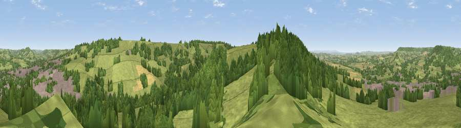

Viewpoint near Honiton
#13801 in England · top 25% of its area beats it · near Honiton · access?Where it is
The exact computed spot (SY 15625 99025). Click the marker for map links.
Public access: no public right of way or access land is recorded at this exact spot — it may be on private land. Computed from Natural England's CRoW access layer and OpenStreetMap rights of way — not the legal definitive map. Always verify locally.
The view, rendered

A 360° render of this exact spot computed from the terrain model, tree cover and land cover — summer colours, afternoon light, calibrated against photographs of famous viewpoints. Real trees, hedges and buildings will differ in detail.
The panorama
Grey silhouette: terrain skyline in each direction (720 bearings, Earth curvature and refraction included). Dashed green: skyline with trees (+15 m) and buildings (+8 m) as obstacles. Blue strip: how far the ground is visible on each bearing.
Where the view opens
Wedge length = distance to the farthest visible ground on that bearing (vegetation-aware). Rings at 10, 25 and 50 km.
What fills the view
56% grassland · 34% woodland · 8% built-up · 3% cropland
Angular shares of the visible panorama (visual magnitude), not map area. Landscape diversity 0.43 (0–1 Shannon).
Key numbers
More beautiful places nearby
The staircase of upgrades: each row has a higher view potential than everything closer. Driving times are estimates from straight-line distance, calibrated against real road routing — check an actual route before setting out.
| Place | Direction | Drive | Score |
|---|---|---|---|
| Viewpoint near Gittisham | SW · 1 km | ~3 min | 64.8 |
| Viewpoint near Gittisham | SW · 3 km | ~8 min | 68.2 |
| Hembury | NW · 6 km | ~13 min | 75.9 |
| Viewpoint near Tipton St John | SSW · 9 km | ~18 min | 81.5 |
| Viewpoint near Colaton Raleigh | SSW · 13 km | ~24 min | 82.1 |
| Viewpoint near Sidmouth | SSW · 13 km | ~24 min | 83.0 |
| High Peak | SSW · 14 km | ~26 min | 85.3 |
| Golden Cap | ESE · 26 km | ~42 min | 88.7 |
50.78464, -3.19826 · source: screening · position refined by local search. Computed location — check access rights before visiting.